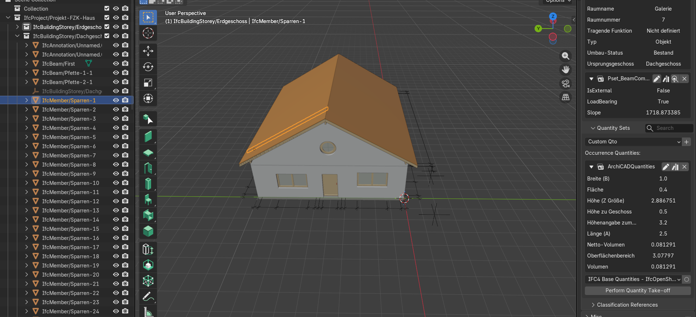
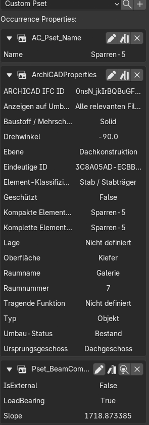
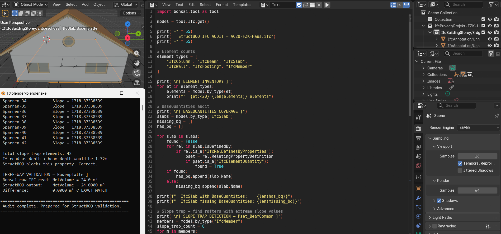
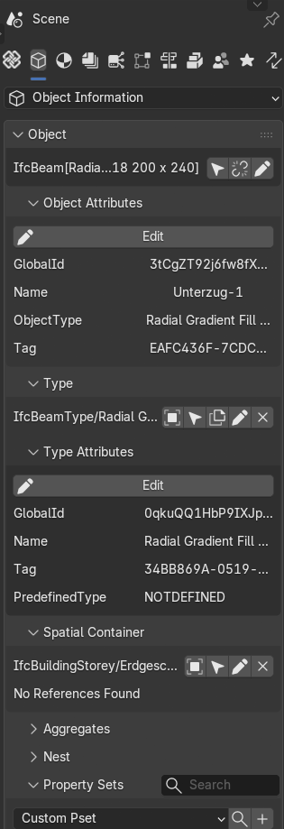
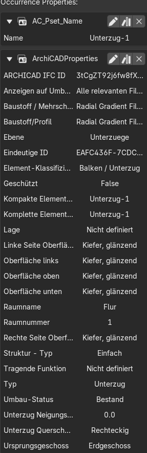
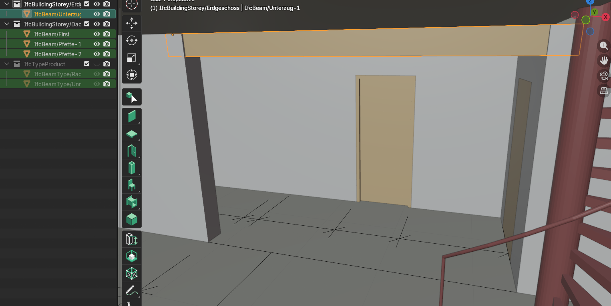
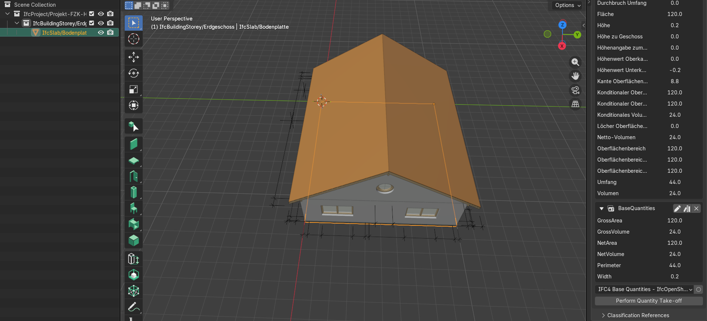
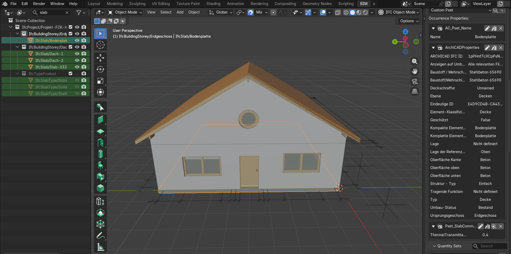
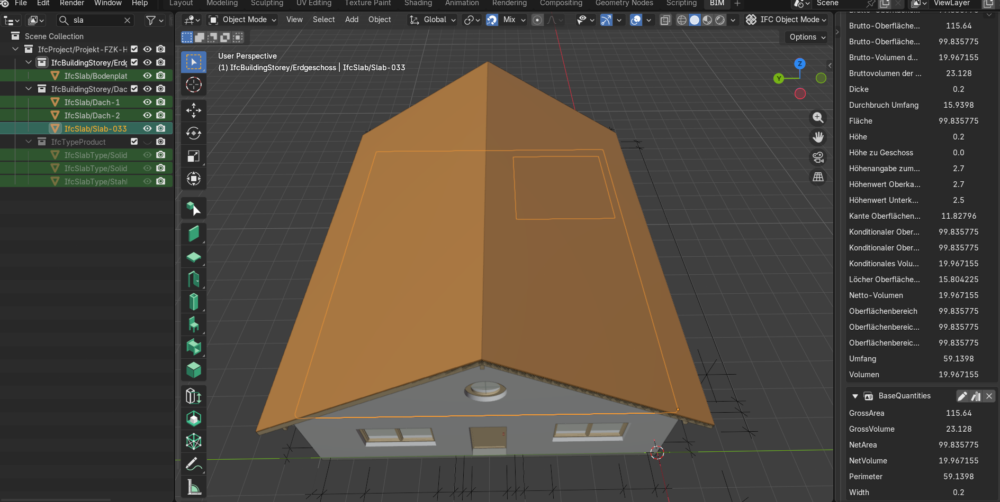
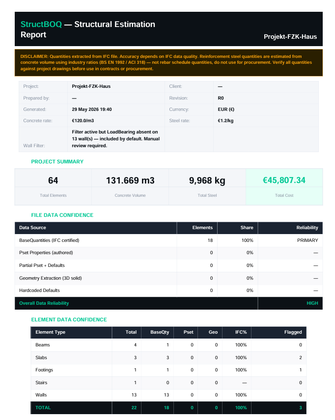

Most automated quantity extraction workflows assume IFC semantics are reliable enough for direct interpretation. A property is read, mapped to a category, and transferred into a BOQ with minimal validation.
In practice, IFC data is a product of modeling decisions, export behavior, drafting conventions, and software-specific interpretation layers — not a dataset explicitly structured for downstream quantity takeoff.
FZK-Haus is one of the most widely used IFC benchmark models in the industry. Developed by researchers at KIT and distributed through buildingSMART, it is used globally by software vendors, universities, and BIM researchers to test interoperability and quantity extraction behavior.
The file exported without error. The quantities existed. The semantics still required verification.
- 18 concrete structural elements
- 131.669 m³ total concrete volume
- 42 timber roof members
- 1 foundation slab
- 2 sloped roof slabs
- 1 concrete beam — inconsistent material metadata
The roof rafters were exported as IfcMember elements with no explicit material identifiers — no timber, wood, or holz in naming or material assignments. Each element contained a property named Slope with a value of 1718.873 under Pset_BeamCommon.
In naive extraction logic, non-geometric properties within common Psets can be incorrectly mapped as dimensional inputs. Under such a mapping, this value propagates into a derived depth calculation of approximately 37.65 m — which is not physically meaningful.
The validation pipeline explicitly excludes non-dimensional attributes — Slope, FireRating, ThermalTransmittance, LoadBearing — from geometry inference. All 42 rafters were correctly classified as non-concrete and excluded from RC quantity extraction.



The only concrete beam in the model carried the exported material identifier: "Radial Gradient Fill 1515460218" — originating from an ArchiCAD 2D section fill definition rather than a structural material assignment. Additional surface metadata referenced Kiefer glänzend (pine glossy), inconsistent with concrete classification.
Element classification was derived from combined evidence: structural naming convention ("Unterzug"), full BaseQuantities availability, geometric placement beneath the primary slab system at ground floor level, and contextual consistency within the structural grid. Material metadata alone was not sufficient for reliable classification.



The foundation slab "Bodenplatte" was exported as IfcSlab with PredefinedType = BASESLAB. In standard workflows, slabs are often processed under uniform reinforcement assumptions. Foundation elements require distinct structural and reinforcement logic. The pipeline detected the predefined type and reclassified the element into a foundation category prior to quantity and reinforcement logic assignment.


One floor slab contained a circular opening for a staircase core. If GrossVolume is used for estimation, the slab is over-quantified by 13.7% on this element alone.
The pipeline consistently uses NetVolume for all quantity calculations. BOQs reflect constructed geometry rather than pre-void mass representation.

All 18 concrete elements were independently validated against raw IFC quantities using Bonsai / BlenderBIM. No material quantity discrepancies were identified. All final concrete quantities were derived exclusively from IFC BaseQuantities. No geometric fallback was required at any stage.

These are the actual StructBOQ outputs generated from this IFC file. No data has been modified. Cost figures use default rates (€120/m³ concrete, €1.2/kg steel) and are indicative only — not market rates. Download and open to inspect the full element-level breakdown, confidence scoring, and validation findings.
Generated by StructBOQ v3.3 · shabirbim.com · Outputs are unmodified engine results
This benchmark model does not contain modeled reinforcement geometry. Steel quantities were derived using rule-based estimation based on BS EN 1992 design assumptions. Concrete quantities are fully validated at the data-source level. Steel outputs remain indicative and are not suitable for procurement or contractual use.
IFC is not a deterministic representation of construction reality. It is an exported model whose semantics are shaped by authoring decisions, software interpretation layers, and exchange configurations.
In quantity workflows, failures rarely originate from incorrect mathematics. They originate from unvalidated semantic assumptions that propagate silently through estimation, procurement, reinforcement planning, and cost control processes.
The role of validation is not to override engineering judgment, but to surface ambiguity before it becomes a financial or contractual error downstream.